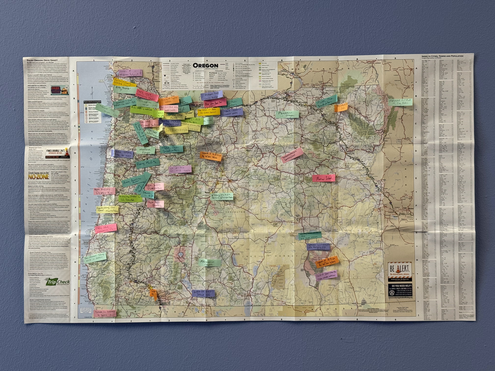

Welcome to our Guide to Oregon Literature! We compiled this project in a course of the same name at Oregon State University, which I taught in the spring of 2026. It was an advanced undergraduate / graduate course in English with 24 students. I developed the course because I'm always thinking about relationships between literature and place, and I wanted an excuse to explore the literature of my new home state-while embarking on an ambitious project with my brilliant students. Aside from a few random listicles, there weren't many recent projects that took stock of Oregon's literature. The strongest precursor was the 1990s Oregon Literature Series of six genre-based anthologies, published by Oregon State University Press in collaboration with the Oregon Council of English Teachers. This was an impressive project, but has not been updated since, and two of the volumes have gone out of print.
At the beginning of the course, I set very few parameters. I said that we wanted to create, by the end of our 10 weeks together, the material for a guide to Oregon literature; I wanted students to each contribute a couple of entries; and I didn't want to do an anthology, so that we could avoid dealing with permissions. Everything else-the form of the entries, the scope of what we covered, and, oh yeah, what does "Oregon literature" mean, anyway?-we decided as a group. For about half of the course, we discussed common readings that I'd selected for their differential approaches to the state and place-based engagement. I've written entries for several of these texts, such as Dur E Aziz Amna's American Fever (2022) and Beth Piatote's The Beadworkers (2019), that appear in the Guide. These discussions provided a foundation for our broader definitional discussions throughout the term.
Through a combination of surveys, small and large group discussions, and straw polls, I solicited every student's perspective on all our key issues. A few of the conceptual questions we worked through:
We collaboratively devised the form of this Guide, arriving at the standard structure of an entry through consensus. The group also decided on which other pages to include, and where and how to link parts of the site to each other for optimal user experience. We even collectively selected the topics I'd cover in this introduction.
Here's a bit about the scope of what is and isn't covered in this Guide. Our Guide, in some ways, updates the 1990s Oregon Literature Series, so we chose to focus largely on contemporary publications that may not have gotten attention in previous retrospectives. We have only included one text published before 1900 (though in a 1990s edition), three more from before 1980, six published in the 1980s (including one reissued in a new edition in 2026), and five published in the 1990s. As for the twenty-first century, we have seven texts published in the 2000s, eighteen in the 2010s, and fourteen in the 2020s. We felt that not only did our contemporary focus allow us to spotlight texts that had not appeared in previous canons of "Oregon literature," it also allowed us access to a canon that was more diverse on many axes, given the changes in Oregon's demographics over the last few decades (To give just one example, the 1990 Census found Oregon's population to be 90.8% non-Hispanic white; by the 2024 Census Bureau estimate, Oregon's population was 71.8% non-Hispanic white).
Fiction accounts for the majority of the texts here (30), though we have solid minorities of nonfiction (17) and poetry (8), with a quick sprinkle of drama (2). Within fiction and nonfiction, our texts explore a variety of genres, from science fiction to historical fiction, memoir to history. As we selected texts in rounds, we took care to mitigate some underrepresented areas in our initial selections. For example, we intentionally worked to include more texts that engaged with Southern and Eastern Oregon, LGBTQ+ themes and characters, disabled perspectives, and that were written by writers of color.
Of course, given that we had twenty-five people (including me) and ten weeks, we had some significant limitations, and naturally wound up with some omissions. Though we have included a few young adult novels, children's literature is largely absent from the Guide, which we chose to accept as lower priority given our target audiences. Only late in the game did we realize we had close to nothing that engaged with Central Oregon (One student joked that Central Oregon was "like a middle child," neglected amidst its siblings jockeying for attention). I am sure that we have other omissions that we have neglected to name here, perhaps even neglected to notice-please feel free to write to us if you notice any.
As for regional representation, we spent plenty of time discussing the geography of Oregon. On the first day of class, I handed each student a road map of the state (Thank you to the Visit Portland center for giving me 25 copies). We looked at plenty of other maps together over the course of the term and debated how best to demarcate regional divisions. Though Oregon is a large state, around 50% of the population lives in the Portland metropolitan area, and around 75% in the broader Willamette Valley, so the idea of regional balance can be a bit tricky here. We discussed whether to include a sophisticated map of our texts in the final guide, given the role that maps and geography had played throughout the course. Late in the term, we mocked up what that might look like with some Post-It flags and one of the road maps. Ultimately, we decided that, given our broad definition of Oregon literature, it was impossible to achieve consistency. Some of us marked locations where our texts were set, others where authors lived, and sometimes, we did both. Instead of creating something meticulous and digital, we decided to commemorate the messy process by including a photo of our in-class map here.

You can see a big cluster of flags around Portland, sometimes overlapping each other, with a healthy set in the Willamette Valley down to Eugene. From there, a smattering of texts runs up and down the Oregon Coast and into the Columbia River Gorge, with larger gaps between flags as we move into Southern and Eastern Oregon, and a couple of outliers in Central Oregon. One flag, for the play Salmon Is Everything, even crosses the border into California, given that (as you can read in the corresponding entry) this is an Indigenous-focused text that interrogates administrative borders.
We hope that our Guide is useful for anyone who comes upon it, but we designed it with a few audiences in mind. While we incorporate insights from our academic studies, we want this guide to be broadly accessible. Students from the high school level onwards might find our guide useful. We would like both our peers at Oregon State University and students at other institutions to explore this resource. We'd like it to speak to Oregon readers who are looking for work that addresses their state, as well as readers outside the state who might wonder how the state shows up in literature. Finally, we would especially like this guide to find its way into the state's public libraries, resources that are free and seek to make reading accessible to all. In that spirit, we've included a Library Resource Page, encouraging you to use libraries to access the texts we write about here.
We hope you enjoy looking through our Guide to Oregon Literature, and perhaps discover a new favorite read. If you have any questions or comments, please feel free to contact me at surabhi dot balachander at oregonstate dot edu.
Surabhi Balachander